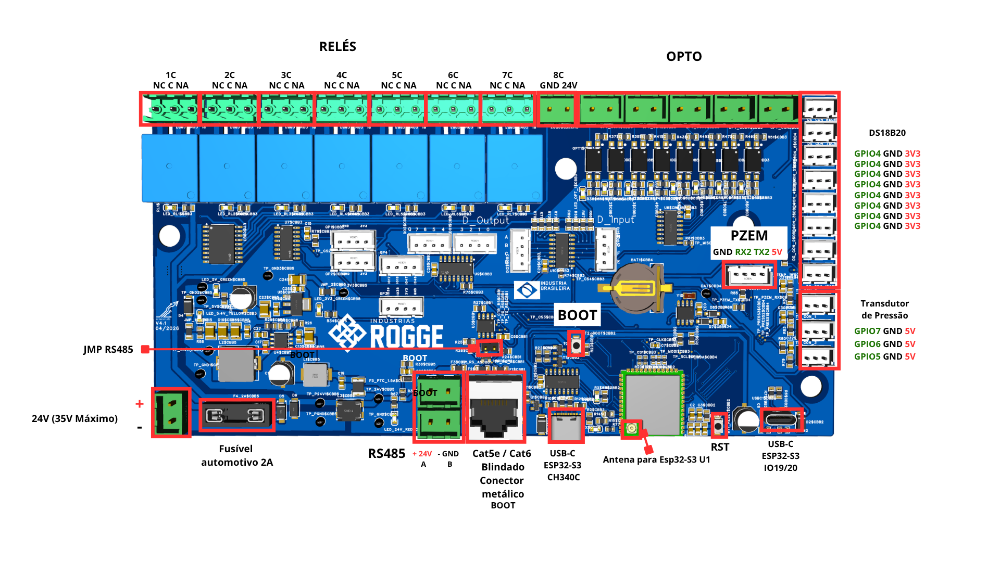

Rogge Industries — Placa IHM V1.0
Interface Homem-Máquina para Painel de Controle, Display LCD 16x2 I2C, Teclado de Botões 74HC165D, Sinalização RGB NeoPixel e Comunicação Serial RS485.
📋 Visão Geral do Sistema IHM V1.0
Arquitetura de hardware e especificações técnicas da placa de interface e controle local Rogge IHM V1.0.
🖥️ Função e Aplicação Industrial
O módulo Rogge IHM V1.0 gerencia a interface direta com o operador na porta do painel elétrico. Permite visualização do status de operação em tempo real, seleção de parâmetros via encoder rotativo e envio de comandos críticos para a placa Rogge Main v4.1 através do barramento serial isolado RS485.
- Microcontrolador: ESP32-S3 (Dual-Core Xtensa® 32-bit LX7)
- Display Principal: LCD 16x2 Alfanumérico via Expansor I2C PCF8574 (Endereço 0x27)
- Interface de Entrada: Encoder Rotativo com Switch + 8 Botões em Shift Register 74HC165D
- Sinalização Visual: 5x LEDs RGB 5050 Endereçáveis em Cascata (WS2812B / NeoPixel)
⚡ Barramentos e Comunicação
Especificações dos barramentos de comunicação e periféricos integrados à PCB da IHM V1.0:
- Comunicação RS485: Transceiver Half-Duplex THVD1450DR nos GPIOs 41 (RX), 42 (TX) e 40 (RE/DE) a 9600 baud.
- Barramento I2C: Comunicação rápida para o Display LCD 16x2 com suporte a rotação 180° via firmware.
- Barramento Shift Register (SPI Software): Leitura paralela dos botões com tempo de varredura < 1ms.
- Barramento NeoPixel: Protocolo NRZ de 800 kHz no GPIO 6 com controle individual de cor e brilho.
🔌 Pinout Completo da Placa IHM V1.0
Diagrama visual do hardware e mapeamento detalhado de todos os GPIOs definidos no arquivo pins_config.hpp.
🗺️ Diagrama de Layout e Identificação dos Componentes
Clique na imagem abaixo para expandir a visualização em alta resolução dos conectores e componentes da placa Rogge IHM V1.0.

ESP32-S3 Mapeamento de Pinos da PCB (pins_config.hpp)
| Periférico / Bloco | Pino do Periférico | GPIO (ESP32-S3) | Sinal / Protocolo | Parâmetros & Observações Técnicas |
|---|---|---|---|---|
| Transceiver RS485 (THVD1450DR) | R (Receiver Output) | GPIO 41 | UART RX (Serial1) | Pino de recepção de dados seriais da placa Rogue Main v4.1 |
| Transceiver RS485 (THVD1450DR) | RE / DE (Enable) | GPIO 40 | GPIO Output | Controle de direção Half-Duplex (LOW = Escuta RX, HIGH = Transmissão TX) |
| Transceiver RS485 (THVD1450DR) | D (Driver Input) | GPIO 42 | UART TX (Serial1) | Pino de transmissão de dados seriais | Baud Rate: 9600 baud |
| Shift Register Botões (74HC165D) | Clock (CP) | GPIO 12 | Digital Output | Sinal de clock para deslocamento dos bits de entrada dos botões |
| Shift Register Botões (74HC165D) | Serial Data Out (Q7) | GPIO 13 | Digital Input (MISO) | Leitura serial do estado dos 8 botões (Botões C, E, F, G, H) |
| Shift Register Botões (74HC165D) | Parallel Load (SH_LD / PL) | GPIO 14 | Digital Output (CS1) | Pulso de Latch para capturar o estado paralelo dos botões em memória |
| LEDs RGB NeoPixel (WS2812B 5050) | Data Input (DIN) | GPIO 6 | Single-Wire NRZ | Sinal serial a 800 kHz para 5x LEDs RGB | Brilho padrão: 40 (0-255) |
| Encoder Rotativo | Pino A (CLK) | GPIO 7 | PCNT Pulse Input | Entrada de pulso quadratura acoplada ao periférico de hardware PCNT |
| Encoder Rotativo | Pino B (DT) | GPIO 5 | PCNT Control Input | Sinal de controle de direção de rotação (CW Horário / CCW Anti-horário) |
| Encoder Rotativo | Switch (SW) | GPIO 4 | Digital Input (Pull-up) | Botão de clique frontal do encoder para confirmação / reset do contador |
| Display LCD 16x2 I2C (PCF8574) | SDA / SCL | I2C Nativo | Barramento I2C | Endereço I2C: 0x27 | Display 16 colunas x 2 linhas | Backlight controlado |
#ifndef PINS_CONFIG_HPP
#define PINS_CONFIG_HPP
// ============================================================================
// DC CIRCUIT LABS - CONFIGURAÇÃO DE PINOS DA PLACA IHM v1.0 (ESP32-S3)
// ============================================================================
// --- Barramento RS485 (Transceiver THVD1450DR) ---
#define PIN_RS485_R 41 // R (Receiver Output / RX) -> GPIO41
#define PIN_RS485_RE_DE 40 // RE/DE (Enable RX/TX) -> GPIO40
#define PIN_RS485_D 42 // D (Driver Input / TX) -> GPIO42
#define RS485_BAUD_RATE 9600
// --- Shift Register de Botões (CI 74HC165D) ---
#define PIN_BTN_CLK 12 // Clock (CP) -> GPIO12
#define PIN_BTN_MISO 13 // Serial Data Out (Q7) -> GPIO13
#define PIN_BTN_CS1 14 // Parallel Load (SH_LD / PL) -> GPIO14
// --- LEDs RGB NeoPixel (WS2812B 5050) ---
#define LED_PIN 6 // Data Input (DIN) -> GPIO6
#define NUM_LEDS 5 // Quantidade de LEDs RGB na fita
#define BRIGHTNESS 40 // Nível de brilho (0 a 255)
// --- Encoder Rotativo com Botão ---
#define ENCODER_PIN_A 7 // Pino A (CLK) -> GPIO7
#define ENCODER_PIN_B 5 // Pino B (DT) -> GPIO5
#define ENCODER_PIN_SW 4 // Switch (SW) -> GPIO4
// --- Display LCD 16x2 I2C (PCF8574) ---
#define LCD_I2C_ADDR 0x27
#define LCD_COLS 16
#define LCD_ROWS 2
#endif // PINS_CONFIG_HPP📡 Comunicação RS-485 & Protocolo entre IHM e Placa Principal
Manual completo de instalação física, elétrica, topologia de rede, arquitetura dual-core em FreeRTOS, protocolo de dados binários, máquina de estados FSM e mecanismo de Heartbeat.
A IHM foi projetada para ser alimentada com 24V DC diretamente através do cabo de rede RJ45 vindo da Placa Principal (Rogge V4.1). NUNCA alimente a IHM pelo conector de borne local de 24V caso ela já esteja conectada a um cabo RJ45 que forneça energia. A alimentação dupla simultânea causará conflitos elétricos no circuito e queimará a placa irreversivelmente. Utilize estritamente apenas uma via de alimentação.
🔌 Infraestrutura Física e Cabeamento
Para garantir alta imunidade contra ruídos industriais e evitar travamentos por interferência eletromagnética (EMI):
- Cabo Recomendado: Utilize exclusivamente cabos de rede par trançado blindados (CAT5e FTP/STP ou CAT6 STP com malha).
- Conectores RJ45 Metálicos: É obrigatório o uso de conectores RJ45 com carcaça blindada metálica para dar continuidade à blindagem e aterrar a malha do cabo.
- Transceiver RS-485: Circuito integrado industrial THVD1450DR (Half-Duplex) alimentado a 3.3V com proteção contra ESD e transientes.
- Pinos do ESP32-S3: GPIO 41 (RX), GPIO 42 (TX) e GPIO 40 (RE/DE - Control Direction).
⚡ Jumper de Terminação (120 Ω) & Daisy Chain
O sinal de dados RS-485 exige resistores de terminação para casar a impedância da linha e suprimir reflexões de sinal ("eco"):
- 🟢 Jumper Fechado (Com Jumper): Colocar apenas nas duas extremidades físicas da linha (primeiro e último equipamento da rede).
- 🔴 Jumper Aberto (Sem Jumper): Remover obrigatoriamente de todos os equipamentos intermediários no meio da cadeia.
🛠️ Conectores Auxiliares de Expansão (Terminais Verdes 5.08mm)
Ao lado da porta RJ45, a placa conta com dois conectores de borne de parafuso para flexibilidade extra no painel elétrico:
⚡ Borne de Alimentação Auxiliar (24V e GND)
Permite alimentar a placa com fonte externa de 24V local caso NÃO esteja recebendo energia pelo cabo RJ45. Lembre-se da regra de alimentação única para não queimar a placa.
📡 Borne de Comunicação RS-485 Auxiliar (A e B)
Interligado diretamente ao mesmo barramento do conector RJ45. É ideal para estender a rede para inversores de frequência, CLPs ou sensores de terceiros com fios descascados comuns. Ligar A com A e B com B.
⚠️ Limites de Corrente, Proteção PTC e Capacidade do Cabo de Rede
A passagem de energia (24V) pelo cabo de rede foi projetada exclusivamente para alimentar a eletrônica lógica da IHM. O instalador deve respeitar rigorosamente as diretrizes elétricas abaixo:
⚡ O Limite do Circuito (Proteção PTC no RJ45)
A trilha que gerencia os 24V no cabo de rede é protegida por um componente PTC (fusível térmico) na entrada do conector RJ45.
🔌 Alimentando Cargas Pesadas (Fonte Externa & Remoção do PTC)
Caso o projeto exija acionar cargas de alta corrente, utilize uma fonte 24V dedicada externa:
- 1. Interligue os GNDs: Conecte o GND da fonte externa ao GND da IHM para criar a referência comum da RS-485.
- 2. Remova o PTC do RJ45: Retire fisicamente o fusível PTC de 24V do conector RJ45 (não alterar o fusível principal). Isso isola os 24V do cabo de rede, transformando o RJ45 em via exclusiva de dados RS-485. A IHM passa a ser alimentada localmente pelo borne verde.
🛑 Bitola 24 AWG & Qualidade do Cabo (100% Cobre vs CCA)
Os condutores internos do cabo de rede possuem bitola fina (24 AWG) desenvolvidos para dados:
- 🔴 PROIBIDO Cabos CCA (Alumínio Cobreado): Têm alta resistência elétrica. Causam queda severa de tensão, aquecimento da fiação e resets constantes da IHM.
- 🟢 OBRIGATÓRIO Cabos 100% Cobre Puro: Utilize apenas cabos estruturados homologados 100% Cobre para garantir corrente estável e sem perda de energia em longas distâncias.
🧠 Arquitetura de Software Dual-Core (FreeRTOS / ESP32-S3)
Para evitar congelamento da tela e perda de dados, o firmware divide o processamento de forma thread-safe entre os dois núcleos do ESP32-S3:
⚙️ CORE 0 — Comunicação, Protocolo & Heartbeat
- Driver de hardware da UART RS-485 com comutação de RE/DE.
- Máquina de Estados (FSM) de parsing byte-a-byte sem funções blocantes.
- Cálculo e verificação de integridade CRC16 de cada pacote recebido.
- Envio periódico de pacotes de Heartbeat (300ms) e monitoramento de Timeout (1200ms).
- Despacho de pacotes validados para as filas do FreeRTOS (
xQueueRxData).
🖥️ CORE 1 — Interface Gráfica (LVGL) & Interação do Operador
- Loop de renderização contínua do Display / LVGL / TFT_eSPI.
- Varredura do Touchscreen e leitura de botões/encoder.
- Consumo dos dados de telemetria da fila
xQueueRxDatapara atualização dos mostradores. - Postagem de novos comandos de usuário na fila
xQueueTxCmdpara envio pelo Core 0. - Exibição de alertas pop-up e bloqueio da tela em caso de falha no Heartbeat.
📦 Estrutura de Pacotes Binários & Validação CRC16
O protocolo utiliza quadros binários empacotados via #pragma pack(push, 1) para máxima eficiência e imunidade a travamentos por texto truncado:
| Campo | Tipo / Tamanho | Valor Exemplo | Descrição & Função |
|---|---|---|---|
| Start Bytes | uint8_t[2] (2 Bytes) |
0xAA, 0x55 |
Sequência fixa de sincronismo para localização do início de pacote pelo parser FSM. |
| Message ID | uint8_t (1 Byte) |
0x01 (Telemetria) / 0x02 (Comando) / 0xFF (Ping) |
Identificador único do tipo de dado contido no payload. |
| Payload Length | uint8_t (1 Byte) |
N Bytes |
Tamanho exato do corpo da mensagem em bytes. |
| Payload Data | struct (N Bytes) |
Estrutura C++ Empacotada | Valores de medições (Volts, Amperes, Temp, Erros) ou setpoints de comandos. |
| Checksum CRC16 | uint16_t (2 Bytes) |
CRC-CCITT / MODBUS | Código polinomial de validação matemática contra corrupção por ruído elétrico na linha. |
💻 Código Exemplo Unificado de Comunicação RS-485 (PlatformIO / C++)
Implementação de referência demonstrando a Máquina de Estados FSM não blocante, FreeRTOS Queues e o gerenciador de Heartbeat com timeout:
#include <Arduino.h>
#include "freertos/FreeRTOS.h"
#include "freertos/queue.h"
// ───────── DEFINIÇÕES DO HARDWARE E PROTOCOLO ─────────
#define PIN_RS485_RX 41
#define PIN_RS485_TX 42
#define PIN_RS485_DE 40 // Driver Enable (High = TX, Low = RX)
#define HEADER_BYTE1 0xAA
#define HEADER_BYTE2 0x55
#define MSG_ID_TELEMETRY 0x01
#define MSG_ID_COMMAND 0x02
#define MSG_ID_HEARTBEAT 0xFF
#define HEARTBEAT_INTERVAL_MS 300
#define COMMUNICATION_TIMEOUT_MS 1200
#pragma pack(push, 1)
typedef struct {
float tensao_v;
float corrente_a;
uint16_t temperatura_c;
uint8_t status_flags;
} TelemetryPayload_t;
typedef struct {
uint8_t cmd_id;
float setpoint_v;
float setpoint_i;
} CommandPayload_t;
#pragma pack(pop)
// Filas Thread-Safe do FreeRTOS
QueueHandle_t xQueueRxTelemetry;
QueueHandle_t xQueueTxCommand;
// Globais de Controle de Conexão
static uint32_t last_rx_timestamp = 0;
static uint32_t last_tx_heartbeat = 0;
static bool g_system_online = false;
// ───────── FUNÇÃO DE CÁLCULO DE CRC16 ─────────
uint16_t calculateCRC16(const uint8_t *data, size_t length) {
uint16_t crc = 0xFFFF;
for (size_t i = 0; i < length; i++) {
crc ^= data[i];
for (uint8_t j = 0; j < 8; j++) {
if (crc & 0x0001) crc = (crc >> 1) ^ 0xA001;
else crc = crc >> 1;
}
}
return crc;
}
// ───────── MÁQUINA DE ESTADOS DE PARSING (FSM NÃO-BLOCANTE) ─────────
enum ParseState { WAIT_H1, WAIT_H2, READ_ID, READ_LEN, READ_PAYLOAD, READ_CRC1, READ_CRC2 };
void parseRS485Stream(HardwareSerial &bus) {
static ParseState state = WAIT_H1;
static uint8_t msg_id = 0, payload_len = 0, rx_buf[256], rx_idx = 0;
static uint16_t rx_crc = 0;
while (bus.available() > 0) {
uint8_t b = bus.read();
switch (state) {
case WAIT_H1:
if (b == HEADER_BYTE1) state = WAIT_H2;
break;
case WAIT_H2:
if (b == HEADER_BYTE2) state = READ_ID;
else state = WAIT_H1;
break;
case READ_ID:
msg_id = b;
state = READ_LEN;
break;
case READ_LEN:
payload_len = b;
rx_idx = 0;
if (payload_len > 0 && payload_len <= sizeof(rx_buf)) state = READ_PAYLOAD;
else if (payload_len == 0) state = READ_CRC1;
else state = WAIT_H1;
break;
case READ_PAYLOAD:
rx_buf[rx_idx++] = b;
if (rx_idx >= payload_len) state = READ_CRC1;
break;
case READ_CRC1:
rx_crc = b;
state = READ_CRC2;
break;
case READ_CRC2:
rx_crc |= ((uint16_t)b << 8);
if (rx_crc == calculateCRC16(rx_buf, payload_len)) {
// PACOTE VÁLIDO! Atualiza timestamp do Heartbeat
last_rx_timestamp = millis();
if (msg_id == MSG_ID_TELEMETRY) {
TelemetryPayload_t telem;
memcpy(&telem, rx_buf, sizeof(telem));
xQueueSend(xQueueRxTelemetry, &telem, 0);
}
}
state = WAIT_H1; // Reinicia parser
break;
}
}
}
// ───────── LÓGICA DE HEARTBEAT E TIMEOUT ─────────
void checkHeartbeatStatus(HardwareSerial &bus) {
uint32_t now = millis();
// Transmissão Periódica de Heartbeat
if (now - last_tx_heartbeat >= HEARTBEAT_INTERVAL_MS) {
last_tx_heartbeat = now;
digitalWrite(PIN_RS485_DE, HIGH); // Ativa Transmissão
bus.write(HEADER_BYTE1);
bus.write(HEADER_BYTE2);
bus.write(MSG_ID_HEARTBEAT);
bus.write((uint8_t)0); // Sem payload
uint16_t crc = calculateCRC16(NULL, 0);
bus.write(lowByte(crc));
bus.write(highByte(crc));
bus.flush();
digitalWrite(PIN_RS485_DE, LOW); // Retorna para Recepção
}
// Monitoramento de Perda de Sinal
if (now - last_rx_timestamp > COMMUNICATION_TIMEOUT_MS) {
if (g_system_online) {
g_system_online = false;
// Ação de Emergência: Dispara falha na IHM e corta comandos na Placa Principal
}
} else {
g_system_online = true;
}
}
// ───────── TASK DE COMUNICAÇÃO (EXECUTADA NO CORE 0) ─────────
void TaskRS485Communication(void *pvParameters) {
HardwareSerial SerialRS485(1);
SerialRS485.begin(115200, SERIAL_8N1, PIN_RS485_RX, PIN_RS485_TX);
pinMode(PIN_RS485_DE, OUTPUT);
digitalWrite(PIN_RS485_DE, LOW); // Padrão: Modo Recepção
for (;;) {
parseRS485Stream(SerialRS485);
checkHeartbeatStatus(SerialRS485);
vTaskDelay(pdMS_TO_TICKS(5)); // Cede tempo para o scheduler do FreeRTOS
}
}🔍 Visualizador iBOM 3D Interativo (Rogge IHM V1.0)
↗️ Abrir em Tela CheiaExplore o modelo 3D completo da PCB da IHM V1.0, lista de componentes interativa, buscas por designador (Top/Bottom) e posições de soldagem SMT em tempo real.
🧪 Relatório de Validação de Hardware e Testes Práticos
Resultados de bancada e firmware de teste desenvolvidos no repositório DC_Rogge_IHM_1/src/exemplos/.
📋 Resumo da Validação
O firmware TESTE_COMPLETO_IHM valida a interoperabilidade de todos os periféricos de hardware funcionando de forma simultânea sem conflito de interrupção ou queda de tensão na placa.
✅ Itens Validados
| Módulo / Periférico | Comportamento Esperado | Status |
|---|---|---|
| Display LCD 16x2 I2C | Exibição de mensagens do sistema e contadores em tempo real | APROVADO |
| Shift Register 74HC165D | Varredura dos 8 botões físicos sem debounce falso | APROVADO |
| LEDs RGB NeoPixel (WS2812B) | Animação em gradiente contínuo e pisca de status no GPIO 6 | APROVADO |
| Encoder Rotativo PCNT | Contagem contínua via hardware com filtro de ruído glitch | APROVADO |
| Comunicação RS485 | Envio do comando CMD:RELE1_TOGGLE e recepção do pacote da Rogue |
APROVADO |
#include <Arduino.h>
#include "pins_config.hpp"
#include <Wire.h>
#include <LiquidCrystal_I2C.h>
#include <Adafruit_NeoPixel.h>
#include "driver/pcnt.h"
// Inicialização dos objetos dos periféricos
LiquidCrystal_I2C lcd(LCD_I2C_ADDR, LCD_COLS, LCD_ROWS);
Adafruit_NeoPixel strip(NUM_LEDS, LED_PIN, NEO_GRB + NEO_KHZ800);
void setup() {
Serial.begin(115200);
Wire.begin();
lcd.init();
lcd.backlight();
strip.begin();
strip.setBrightness(BRIGHTNESS);
strip.show();
// Configuração dos pinos do 74HC165D
pinMode(PIN_BTN_CLK, OUTPUT);
pinMode(PIN_BTN_CS1, OUTPUT);
pinMode(PIN_BTN_MISO, INPUT);
// Configuração RS485
pinMode(PIN_RS485_RE_DE, OUTPUT);
digitalWrite(PIN_RS485_RE_DE, LOW); // Modo Escuta RX
Serial1.begin(RS485_BAUD_RATE, SERIAL_8N1, PIN_RS485_R, PIN_RS485_D);
lcd.setCursor(0, 1);
lcd.print("ROGGE IHM V1.0");
lcd.setCursor(0, 0);
lcd.print("SISTEMA OK!");
}
void loop() {
// Loop de controle integrado
delay(20);
}📋 Resumo da Validação
Validação da ponte de comunicação serial RS485 a 9600 baud entre a placa IHM V1.0 e a placa Rogue Main v4.1. Ao pressionar o Botão C (Bit 2 do 74HC165D), o pino RE/DE (GPIO 40) comuta para nível alto (HIGH) e dispara a string CMD:RELE1_TOGGLE\n via RS485.
✅ Itens Validados
| Item Validado | Descrição da Validação | Status |
|---|---|---|
| Transceiver THVD1450DR | Comutação correta de direção RX/TX via pino RE/DE (GPIO 40) | APROVADO |
| Recepção de Pacotes NUM | Recepção dos dados NUM:<valor> vindo da Rogue e exibição no LCD 16x2 |
APROVADO |
| Disparo de Comando de Relé | Acionamento do Botão C transmite pulso sem erros de enquadramento serial | APROVADO |
// Trecho principal de envio RS485 ao pressionar Botão C
void enviarComandoReleRS485() {
digitalWrite(PIN_RS485_RE_DE, HIGH); // Ativa o Driver TX
delayMicroseconds(50);
Serial1.print("CMD:RELE1_TOGGLE\n");
Serial1.flush();
digitalWrite(PIN_RS485_RE_DE, LOW); // Retorna para Modo RX
Serial.println("[RS485 TX] Comando enviado: CMD:RELE1_TOGGLE");
}📋 Resumo da Validação
Os 5 LEDs RGB 5050 foram testados via biblioteca Adafruit NeoPixel operando no GPIO 6 a 800 kHz. O código calcula dinamicamente a mistura dos canais Vermelho e Azul para criar um gradiente harmônico de cores.
✅ Itens Validados
| Item Validado | Descrição da Validação | Status |
|---|---|---|
| Linha de Dados (GPIO 6) | Sinal de 800 kHz NRZ transmitido sem erro de temporização pelo ESP32-S3 | APROVADO |
| Cascata Data-In / Data-Out | Sinal percorreu perfeitamente a fita de 5 LEDs em série | APROVADO |
| Mistura de Cores RGB | Transição contínua entre Azul (0,0,255), Violeta, Magenta e Vermelho (255,0,0) | APROVADO |
uint32_t calcularCorGradienteAzulParaVermelho(int indice) {
if (NUM_LEDS <= 1) return strip.Color(0, 0, 255);
float fracao = (float)indice / (float)(NUM_LEDS - 1);
uint8_t r = (uint8_t)(fracao * 255);
uint8_t g = 0;
uint8_t b = (uint8_t)((1.0f - fracao) * 255);
return strip.Color(r, g, b);
}📋 Resumo da Validação
Validação da comunicação I2C no endereço 0x27. Como o display foi instalado fisicamente girado em 180° no gabinete da IHM, o software mapeou as linhas invertidas (setCursor(0, 1) para a parte física superior) para alinhar visualmente com a mecânica.
✅ Itens Validados
| Item Validado | Descrição da Validação | Status |
|---|---|---|
| Barramento I2C (PCF8574) | Reconhecimento do chip expansor I2C no endereço 0x27 sem falhas de ACK | APROVADO |
| Controle de Backlight | Acionamento da iluminação de fundo e ajuste de contraste via trimpot | APROVADO |
| Inversão de Tela 180° | Layout das linhas de texto adaptado para montagem física invertida | APROVADO |
📋 Resumo da Validação
Leitura dos 8 bits de entrada do CI 74HC165D via deslocamento serial (shiftIn). A captura em paralelo ocorre ao aplicar um pulso LOW no pino de Latch (CS1 / GPIO 14).
✅ Itens Validados
| Pino do 74HC165D | Botão Mapeado | Estado Lido (Pull-up) | Status |
|---|---|---|---|
| Pino C (Bit 2 / D2) | Botão C | 0 = PRESSIONADO / 1 = SOLTO | APROVADO |
| Pino E (Bit 4 / D4) | Botão E | 0 = PRESSIONADO / 1 = SOLTO | APROVADO |
| Pino F (Bit 5 / D5) | Botão F | 0 = PRESSIONADO / 1 = SOLTO | APROVADO |
| Pino G (Bit 6 / D6) | Botão G | 0 = PRESSIONADO / 1 = SOLTO | APROVADO |
| Pino H (Bit 7 / D7) | Botão H | 0 = PRESSIONADO / 1 = SOLTO | APROVADO |
📋 Resumo da Validação
Utilização do periférico de hardware de contagem de pulsos (PCNT_UNIT_0) do ESP32-S3 com filtro digital de ruído (Glitch Filter = 1023 clocks). O contador incrementa/decrementa sem sobrecarregar a CPU e sem falhas causadas por repique mecânico (bouncing).
✅ Itens Validados
| Sinal do Encoder | GPIO ESP32-S3 | Função no Hardware | Status |
|---|---|---|---|
| Pino A (CLK) | GPIO 7 | Canal 0 de pulso do PCNT | APROVADO |
| Pino B (DT) | GPIO 5 | Canal 1 de sinal de controle (Sentido CW/CCW) | APROVADO |
| Switch (SW) | GPIO 4 | Botão de pressão frontal (Zera o contador do Encoder) | APROVADO |
📋 Resumo da Validação
Teste da porta serial nativa USB-CDC com as flags -D ARDUINO_USB_MODE=1 e -D ARDUINO_USB_CDC_ON_BOOT=1 no platformio.ini, garantindo logs de terminal fluidos a 115200 baud.
✅ Itens Validados
| Item Validado | Descrição da Validação | Status |
|---|---|---|
| Estabilidade de Alimentação | Linhas de 3.3V e 5V fornecendo energia contínua sem resets por brownout | APROVADO |
| Ponte USB-UART CH340C | Gravação de firmware e monitoramento serial sem erro de sincronismo | APROVADO |
⚠️ Observações de Hardware & Troubleshooting
Notas técnicas importantes relativas à montagem, ajustes elétricos e jumpers de bancada da placa IHM V1.0.
Para o correto funcionamento dos LEDs RGB da parte inferior da placa, identificou-se a necessidade de efetuar um jumper físico na PCB. Sem a confecção deste jumper de continuidade na linha de dados (DIN/DOUT) ou alimentação de 5V, apenas os LEDs da parte superior acendiam durante as animações.
Como os displays LCD alfanuméricos 16x2 (HD44780 + PCF8574) possuem a matriz de fontes gravada na memória ROM de hardware (CGROM), não é possível girar a tela por registrador interno como nos displays gráficos OLED. Devido à montagem física de ponta-cabeça na caixa da IHM, a inversão foi realizada via software alterando a chamada das linhas:
lcd.setCursor(col, 1) para escrever na linha física superior e lcd.setCursor(col, 0) para a linha física inferior.
Caso o display LCD acenda apresentando apenas blocos retangulares acesos (sem exibição de caracteres), ajuste o trimpot azul de contraste localizado no módulo expansor I2C PCF8574 até que a nitidez do texto fique ideal.
O parâmetro
BRIGHTNESS nos firmwares foi configurado em 40 a 50 (máximo de 255). Essa limitação é recomendada para evitar consumo excessivo de corrente e aquecimento desnecessário durante os testes em bancada.
O circuito integrado THVD1450DR opera em modo Half-Duplex. Certifique-se de manter o pino
PIN_RS485_RE_DE (GPIO 40) em LOW por padrão para permitir a escuta de pacotes seriais vindos da Rogue Main, elevando para HIGH apenas durante a janela de transmissão.